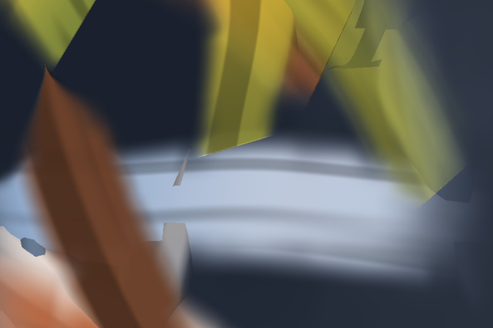

Ant_Fugue
Live visuals, generative painting and image-to-sound instruments, made in New York.
This painting is rendered live in your browser. Move or drag through it to stir the paint.
Work
Software I build to paint, evolve and listen. Most of it runs live, so it can be played like an instrument.
Oramic
Instrument · openFrameworks, GLSL, MIDI / OSC / CV
Turns pictures into sound. Colours, outlines and shapes in a video are read as notes and voltages and sent to a modular synthesizer. Named for Daphne Oram, who drew sound directly onto film.

AbstractGenome
Generative software · openFrameworks, C++, GLSL
A painting engine that breeds abstract-expressionist canvases. Each one grows from a genome of gestures: pours, veils, spatters, scrapes and swaths. Paintings are bred and culled by hand or left to evolve on their own. C++ is the mind, GLSL is the hand.
painterScope
Real-time software · KodeLife, openFrameworks, GLSL
Feed it any image or video and it never shows you the source. It pulls out the colours and repaints them as a Rothko. It began as Rothkoizer and now has profiles for Pollock, de Kooning, Frankenthaler and others.
Velour
Video instrument · WebGL2, TouchDesigner, openFrameworks
Dissolves video into grain and hair. Every pixel becomes a short-lived fibre, so a moving image takes on the nap of velvet.
granularSurge
GPU particle system · openFrameworks, GLSL
plexusCloud
Real-time software · openFrameworks, C++
Gaussian clusters of light, each node wired to its nearest neighbours, breathing through slowly cycling palettes.
 Play
Play
un deux trois
Video, 1:08 · Modular synth, GLSL · Vimeo
 Play
Play
Frog & Toad go to Mongolia
Video, 0:41 · Modular synth, GLSL · Vimeo
A real-time domain-warping study: one field folded through itself again and again.
Cleanup in aisle 3.14
Video, 1:07 · GLSL, KodeLife
Also in the studio
From a library of nearly 300 shader studies.
- Warp Atlas
- 36 domain warps and 36 palettes, gathered into one omnibus shader.
- Stigmergy
- An ant colony that paints with its own pheromone trails.
- Oxblood skein
- A study of paint dragged across canvas in long skeins.
- cobalt_crust
- Impasto relief, lit in real time as it builds up.
- impasto_amalgam
- Five render passes, four painters' hands, one surface.
- de Kooning ribbons
- Ribbon strokes folding through crossfading palettes.
Live
For years I played visuals live around New York using VDMX, building sets from video clips and my own shaders behind both live bands and DJs.

About
Works in KodeLife · openFrameworks · TouchDesigner · VDMX GLSL · C++ Modular Synths Based in Manhattan, New York
Ant_Fugue is the name I work under. I came to generative art through years of live VJ work in New York. These days I mostly build my own instruments: shaders and openFrameworks systems that paint, evolve and listen.
A lot of the work starts from Abstract Expressionism and becomes generative art. A modular synthesizer rack sits beside the screen and the two influence each other.
The name comes from Douglas Hofstadter's Ant Fugue dialogues in his book Gödel, Escher, Bach where an ant colony has no plan yet behaves as if it had one. That is a fair description of generative art.
Contact
For commissions, collaborations, comments:
pogonomyrmex3@gmail.com